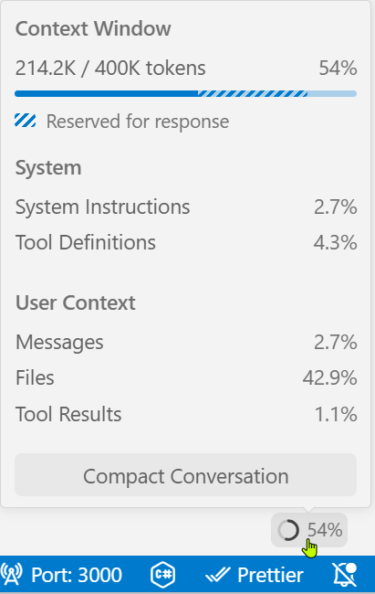
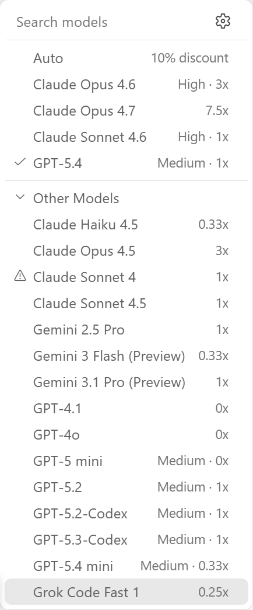
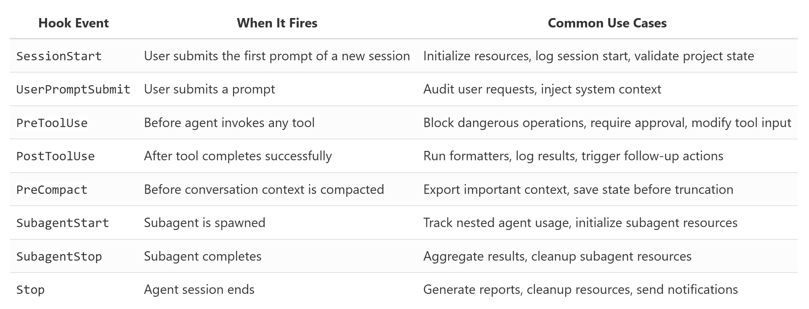
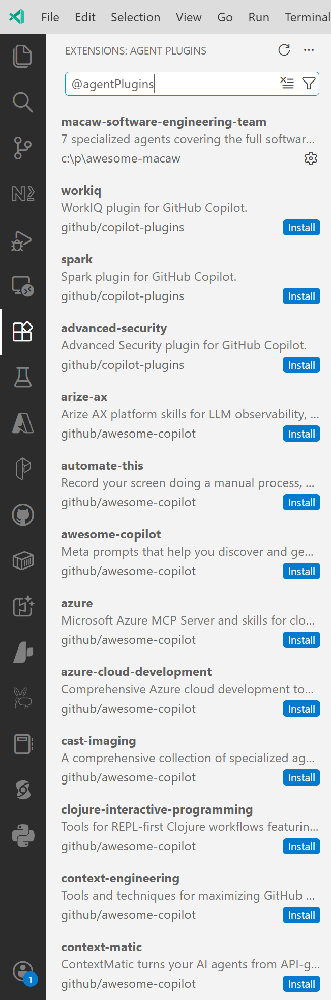
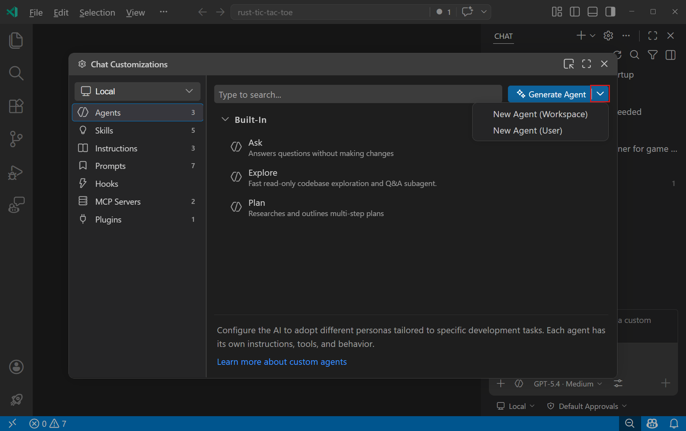

How tools, memory, and repo context make an LLM useful — and how GitHub Copilot in VS Code maps to each piece.
Much of the recent progress in practical LLM systems is not about better models — it is about how we use them.
The raw next-token model. General-purpose, stateless, one shot at a time.
An LLM trained or prompted to spend more inference-time compute on intermediate steps and self-verification.
A control loop around the model that observes, inspects, chooses, and acts — with tools, memory, and feedback from the environment: test results, command output, file changes, and other signals that shape the next step.
A coding harness is a model family plus an iterative loop plus runtime supports.
Gather information from the environment — repo state, file contents, tool output.
Interpret what was observed. What does it mean for the task?
Pick the next step: call a tool, ask the user, edit a file, or stop.
Run the chosen action, feed results back into the loop, repeat.
The harness is the software layer around the model. It assembles prompts, exposes tools, tracks file state, applies edits, runs commands, manages permissions, caches stable prefixes, and stores memory.
When the top models like Claude Opus 4.6 and GPT-5.4 are close in raw capability, the harness is what distinguishes one product from another.
Gather stable facts about the workspace up front so the model isn't starting from zero.
Separate the stable prefix from the changing tail so repeated turns stay cheap.
A named tool vocabulary with validation, path checks, and approval gates.
Clip, deduplicate, and summarize so the prompt doesn't bloat across turns.
A full transcript for resumption and a lighter working memory for task continuity.
Delegate side tasks to child agents with inherited — but constrained — context.
Collect stable facts about the workspace before any work begins.
The agent needs to know the repo root, branch, layout, and any project instructions before it can act.
Separate what rarely changes from what changes every turn.
Don't rebuild everything as one undifferentiated prompt. Keep the stable part stable so the runtime can reuse its cache.
A named tool vocabulary, validated, optionally gated by approval.
Clip, deduplicate, summarize. A lot of “model quality” is context quality.

Two layers: a durable transcript and a lighter working memory.
Context Reduction asked how much past goes into the next turn. Structured Session Memory asks what the agent keeps over time.
Spawn a child for the side question — but bind it tightly.
VS Code + GitHub Copilot expose eight levers for shaping the six components of a coding agent to your project, your standards, and your workflow.
After a chat response completes, a handoff button appears. One click switches to the next agent with relevant context and a pre-filled prompt — the user stays in control of each step.
--- name: Planner tools: [search, web/fetch] handoffs: - label: Start Implementation agent: implementer prompt: Implement the plan. send: false ---




| № | Customization | Primary purpose | Components strengthened |
|---|---|---|---|
| 01 | Instructions | Project-wide rules & standards | Live Repo Context · Prompt Shape & Cache Reuse · Structured Session Memory |
| 02 | Prompt Files | Slash commands for repeat tasks | Prompt Shape & Cache Reuse · Structured Tools & Permissions · Context Reduction |
| 03 | Custom Agents | Personas with scoped tools | Structured Tools & Permissions · Bounded Subagents |
| 04 | Agent Skills | Multi-step capability packs | Structured Tools & Permissions · Context Reduction · Bounded Subagents |
| 05 | Language Models | Engine per task | Cross-cutting · pairs with Bounded Subagents |
| 06 | MCP | External tools & data | Structured Tools & Permissions (reach beyond local) |
| 07 | Hooks | Deterministic lifecycle code | Structured Tools & Permissions · Context Reduction |
| 08 | Plugins | Bundled distribution | All of the above |
| № | Concept | What it does | In GitHub Copilot / VS Code |
|---|---|---|---|
| 01 | Live Repo Context | Stable facts about the workspace | #codebase, @workspace, instruction files |
| 02 | Prompt Shape & Cache | Stable prefix vs. changing tail | copilot-instructions.md, .prompt.md, context vars |
| 03 | Structured Tools | Named tools, validated, approved | Ask / Edit / Agent modes, built-in tools, MCP |
| 04 | Context Reduction | Clip, dedupe, summarize | Summarize Conversation, new-chat reset |
| 05 | Session Memory | Transcript + working memory | Persisted chats, custom modes, user instructions |
| 06 | Bounded Subagents | Delegated side tasks with limits | Agent mode, MCP subtasks, Copilot coding agent |